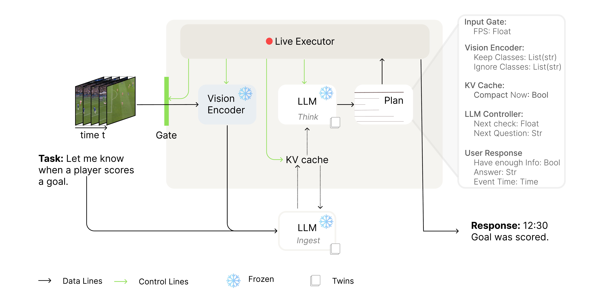
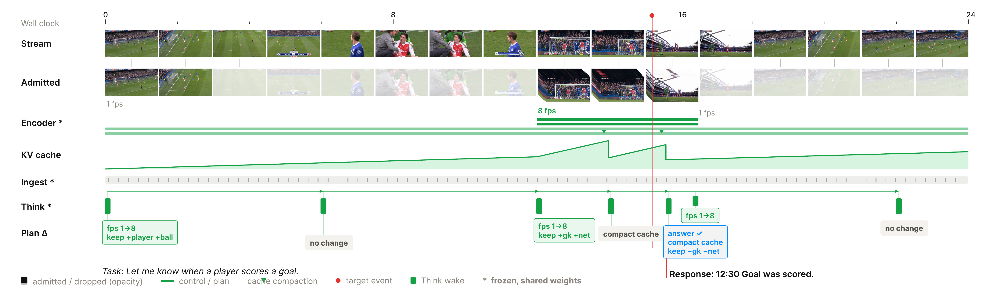
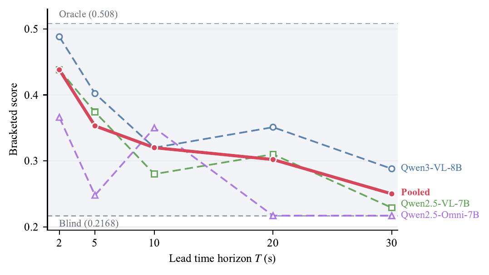
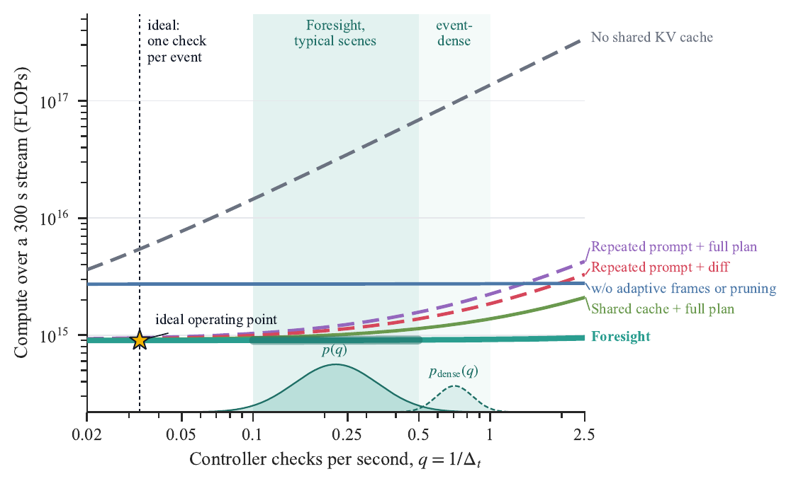

Key facts
TL;DR: Foresight makes streaming vision-language models (video LLMs) proactive without any training: a second copy of the same frozen model runs ahead of the video stream, predicts what will happen, and plans when to look, what to check and how many frames to sample.
- Task: proactive, real-time streaming video understanding (streaming VLM / online video LLM).
- Training-free: frozen Qwen3-VL-8B backbone; only response thresholds are calibrated.
- Architecture: two Siamese LLMs sharing weights, encoders and one KV cache; the Ingest LLM writes, the Think LLM plans asynchronously from a snapshot.
- OmniPro Online: 23.0 mean joint F1, best overall (MiniCPM-o 4.5: 13.5).
- StreamingBench: 66.0 overall (+6.7 over backbone). OVO-Bench: +15.4 over backbone, +18.7 on Forward Active Responding.
- Paper: arXiv:2610.03123 · Code: github.com/thenaivekid/foresight
Abstract
Existing streaming vision-language models (VLMs) continuously perceive and reason over visual streams, but their computational pathways remain fixed throughout inference. Consequently, they cannot adapt computation to evolving scene dynamics, where different future events demand different levels and forms of perception. We show that streaming VLMs inherently possess the ability to anticipate the immediate future, and leverage this capability to dynamically configure future computation in a training-free manner. Realizing such anticipatory computation, however, is very challenging: future anticipation must be sufficiently reliable to guide computation, planning must run concurrently with streaming inference, and online reconfiguration must incur negligible overhead.
To address these challenges, we introduce Foresight, a dual-stream architecture comprising two Siamese LLMs with shared weights, input encoders, and KV cache. The first LLM continuously processes incoming tokens, while the second runs ahead of the stream to anticipate future context, plan future computation, and generate task responses without interrupting streaming inference. Each plan decides when to reason next, what to check then, and how densely to sample, keeping transient evidence separate from persistent control. The resulting computation plan is executed online through an efficient reconfiguration protocol with schema-guided decoding and lightweight diff-based updates, enabling dynamic adaptation with low overhead. With a frozen Qwen3-VL-8B backbone, Foresight achieves 23.0 mean joint F1 on OmniPro Online evaluation beating strongest trained baseline by 9.5%, while improving the backbone by 6.7 on StreamingBench and 15.4 on OVO-Bench, with the largest gain of 18.7 when evidence arrives later in the video stream.
Method

Foresight on one stream

Results
Joint F1 (%) on the OmniPro Online subset that does not need audio. Click methods to show/hide them; hover bars for values.
| Method | Params | Event-Alert | Target-Ground | State-Monitor | Snap.-Count | Cond.-Alert | Cum.-Count | Event-Narr. | Dedup.-Count | Step-Inst. | Mean |
|---|---|---|---|---|---|---|---|---|---|---|---|
| LiveStar | 8B | 9.7 | 0.8 | 0.0 | 0.0 | 14.7 | 0.0 | 1.6 | 0.0 | 6.0 | 3.6 |
| MMDuet2 | 3B | 12.5 | 5.3 | 14.9 | 11.2 | 21.4 | 5.3 | 3.7 | 12.7 | 14.7 | 11.3 |
| MiniCPM-o 4.5 | 9B | 50.1 | 12.6 | 9.8 | 8.0 | 23.8 | 9.0 | 3.0 | 3.8 | 1.4 | 13.5 |
| Dispider† | 7B | 2.3 | 0.0 | 0.0 | 0.0 | 8.5 | 0.3 | 4.5 | 0.1 | 9.7 | 2.8 |
| StreamAgent | 8B | 6.8 | 1.4 | 4.0 | 1.9 | 11.3 | 0.9 | 3.7 | 8.1 | 7.1 | 5.0 |
| QueryStream | 8B | 8.2 | 1.4 | 3.1 | 1.0 | 17.6 | 6.6 | 7.2 | 7.1 | 8.3 | 6.7 |
| Foresight | 8B | 44.7 | 17.9 | 16.4 | 19.1 | 33.8 | 16.3 | 11.5 | 29.2 | 18.5 | 23.0 |
StreamingBench accuracy (%). Click a column header to sort.
| Method | FPS | RTVU | Omni-Source | Contextual | Overall |
|---|---|---|---|---|---|
| VideoLLM-Online | 2 | 35.99 | 28.45 | 26.55 | 32.48 |
| Flash-VStream | 1 | 23.23 | 26.00 | 24.12 | 24.04 |
| Dispider | 1 | 67.63 | 35.66 | 33.61 | 53.12 |
| TimeChat-Online‡ | 1 | 75.36 | 36.96 | 35.63 | 58.11 |
| StreamAgent | 1 | 74.28 | 36.26 | 34.62 | 57.02 |
| Qwen3-VL-8B-Instruct* | – | 74.10 | 41.90 | 39.80 | 59.30 |
| StreamBridge, LLaVA-OV | 1 | 68.39 | 26.60 | 31.74 | 50.96 |
| StreamBridge, LLaVA-OV + Stream-IT | 1 | 70.92 | 26.30 | 29.21 | 51.73 |
| StreamBridge, Qwen2-VL | 1 | 72.01 | 31.30 | 36.57 | 55.09 |
| StreamBridge, Qwen2-VL + Stream-IT | 1 | 77.04 | 24.10 | 32.55 | 55.39 |
| StreamForest‡ | 1 | 77.14 | 38.05 | 36.34 | 60.80 |
| MiniCPM-o 4.5 | – | 78.20 | 42.10 | 44.50 | 62.70 |
| Foresight | adaptive | 79.30 | 48.70 | 43.80 | 66.00 |
OVO-Bench accuracy (%). Click a column header to sort.
| Method | Frames | Real-Time | Backward | Forward | Overall |
|---|---|---|---|---|---|
| Human | native | 93.20 | 92.30 | 92.90 | 92.80 |
| Flash-VStream | 1 fps | 28.37 | 27.38 | 45.09 | 33.61 |
| Dispider | 1 fps | 54.55 | 36.06 | 34.72 | 41.78 |
| TimeChat-Online | 1 fps | 58.60 | 42.00 | 36.40 | 45.60 |
| StreamForest | 1 fps | 61.20 | 52.02 | 53.49 | 55.57 |
| QueryStream | – | 61.40 | 42.10 | 39.03 | 47.51 |
| StreamAgent | 1 fps | 61.30 | 41.70 | 45.40 | 49.40 |
| Qwen3-VL-8B-Instruct* | – | 61.60 | 41.00 | 37.70 | 46.80 |
| MiniCPM-o 4.5 | 1 fps | 67.30 | 55.90 | 55.90 | 59.70 |
| StreamBridge, Qwen2-VL-7B + Stream-IT | 1 fps | 71.30 | 68.05 | 48.36 | 62.57 |
| Foresight | adaptive | 75.02 | 55.10 | 56.37 | 62.16 |
Numbers are taken from the tables in the paper. See the paper for footnotes and evaluation details.
Ablations
Controller and input-processing ablations on OmniPro Online (%). Plan-field rows remove the named control while keeping everything else fixed. The input-processing row replaces two-frame clips with individual-frame inputs.
| Component | Ablation | Time F1 | Joint F1 |
|---|---|---|---|
| Full Foresight (as reported) | 43.7 | 23.0 | |
| Think LLM | Next Check | 43.0 | 18.9 |
| Think LLM | Next Question | 43.3 | 19.4 |
| Think LLM | Next Check + Next Question | 43.2 | 18.6 |
| Vision Gate | FPS | 43.5 | 23.0 |
| Vision Encoder | Keep Classes | 42.7 | 22.7 |
| Vision Encoder | Ignore Classes | 43.5 | 22.9 |
| KV Cache | Compact Now | 44.3 | 23.4 |
| Live Executor | all fields (plan ignored) | 4.7 | 0.7 |
| User Response | all but Answer | 4.0 | 0.3 |
| Input Processing | Individual frames (no two-frame clips) | 40.1 | 19.3 |
Analysis


FAQ: training-free proactive streaming video understanding
Foresight is a streaming video LLM / streaming VLM method for proactive, real-time video understanding. It relates to online video LLMs (VideoLLM-online, MMDuet, Dispider, StreamBridge, StreamAgent, LiveStar, StreamMind, Flash-VStream) and is evaluated on OmniPro, StreamingBench and OVO-Bench.
What is Foresight?
Foresight is a training-free, dual-stream architecture for streaming video LLMs. Two Siamese copies of one frozen VLM share weights, input encoders and KV cache: one keeps ingesting the video stream, the other runs ahead to anticipate the future and plan perception.
Does Foresight need retraining or fine-tuning?
No. The Qwen3-VL-8B backbone stays frozen; only response thresholds are calibrated on a 20% split.
How does a streaming VLM decide when to respond proactively?
In Foresight each plan decides when to reason next, what question to check then, how densely to sample frames (FPS), which objects to track or ignore, and whether there is enough evidence to answer.
How does planning avoid blocking perception?
Only the Ingest LLM writes to the shared KV cache; the Think LLM plans from a read-only snapshot, so perception and reasoning run asynchronously.
How does Foresight perform on OmniPro?
It reaches 23.0 mean joint F1 on OmniPro Online (no-audio subset), versus 13.5 for MiniCPM-o 4.5, the strongest trained baseline.
How does it do on StreamingBench and OVO-Bench?
66.0 overall on StreamingBench (+6.7 over the backbone, best in the paper's table) and +15.4 on OVO-Bench, including +18.7 on Forward Active Responding.
How is Foresight different from StreamAgent, Dispider or StreamBridge?
Dispider and StreamBridge rely on separately trained decision modules; StreamAgent plans on a fixed schedule. Foresight uses one frozen model with a shared KV cache, and its own plan sets the next check time.
Can an offline VLM become a proactive streaming assistant without training?
Yes, that is Foresight's claim: streaming VLMs already anticipate the near future, and Foresight turns that into planned, asynchronous computation without any training.
What are the limitations?
Results depend on the backbone's anticipation and temporal grounding; after a false trigger it may keep reporting the event; and it is sensitive to prompt wording.
BibTeX
@article{neupane2026foresight,
title = {Foresight: Planning Future Perception in Streaming VLMs without Retraining},
author = {Neupane, Ashok Prasad and Bartaula, Dipan and Belbase, Ankit and Adhikari, Saugat and
Ghimire, Samip and Poudel, Saroj and Bhattarai, Binod and Paudel, Danda Pani},
journal = {arXiv preprint arXiv:2610.03123},
year = {2026},
url = {https://arxiv.org/abs/2610.03123}
}